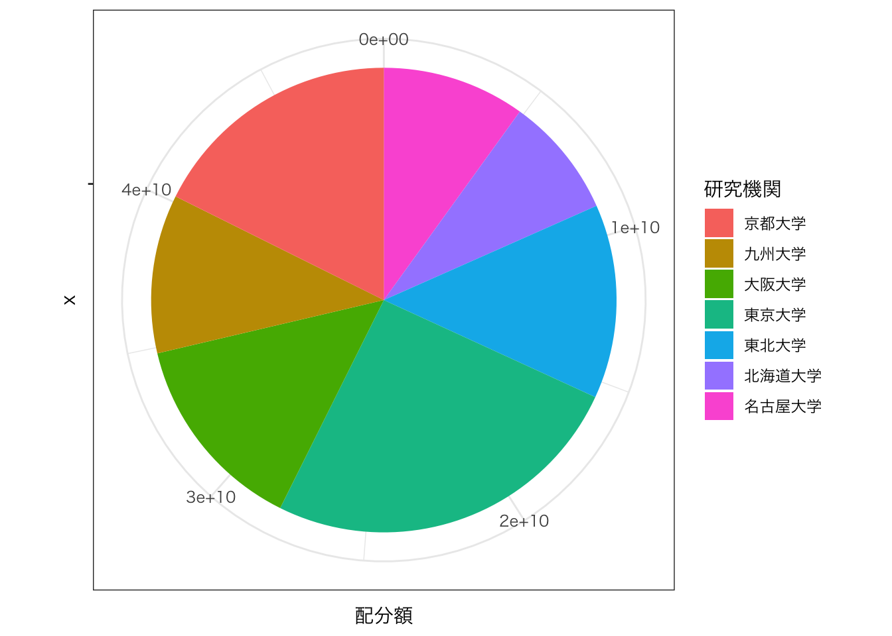
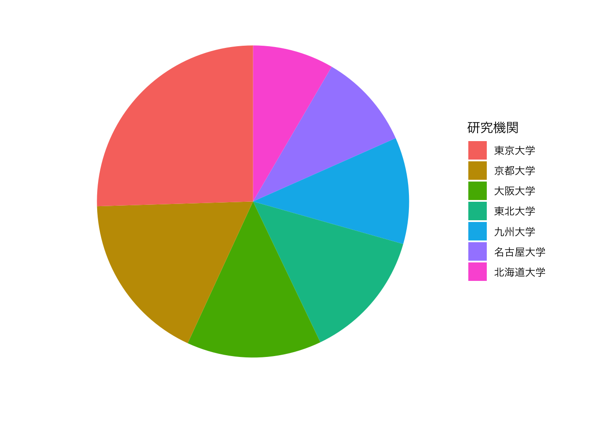
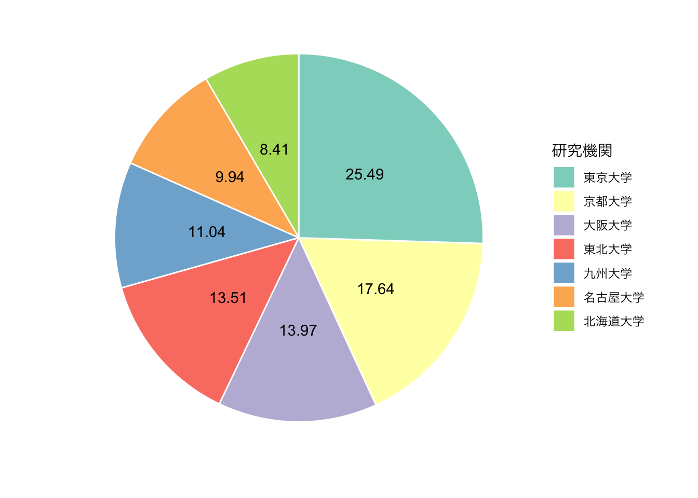

【KAKEN】データの可視化（４）
ー配分額を円グラフで可視化ー
Takuya Kubo, 2020/05/18
０. はじめに
このページでは、ggplot2パッケージを使って科研費の配分額を円グラフで可視化する方法を紹介していきます。
１. 環境設定
必要なパッケージとデータは以下の通りです。今回は2020年度の採択課題データを用いて進めていきます。
# インストールされていない場合は、以下のコマンドの「#」を外して実行
# install.packages("data.table")
# install.packages("dplyr")
# install.packages("DT")
# install.packages("ggplot2")
# パッケージの読み込み
library(data.table) # 高速なデータインポートのため
library(dplyr) # データの整理のため
library(DT) # 集計表の出力のため
library(ggplot2) # 文字列操作のため
# 使用するデータのインポート
d <- fread("kaken_2020.csv")２. データの要約
グラフで描画する前に、研究機関ごとの配分額とその全国シェアを集計します。なお、研究機関は旧帝大に限定しておきます。
D <- d %>% select(研究機関, 研究種目, 総配分額) %>%
filter(研究機関 %in% c("北海道大学", "東北大学", "東京大学", "名古屋大学", "京都大学", "大阪大学", "九州大学")) %>%
mutate(総配分額 = as.numeric(総配分額)) %>%
group_by(研究機関) %>%
summarize(配分額 = sum(総配分額)) %>%
mutate(シェア = round(100 *配分額/sum(配分額), 2)) %>%
arrange(-配分額)
datatable(D)２. 円グラフの描画
まずは最低限の関数で円グラフを描画していきます。途中までは棒グラフを書いているのですが（geom_bar関数まで）、coord_polar関数で棒をくるっと円状にすることによって円グラフになっています。theme_gray関数は日本語を表示させるために使っています。
ggplot(D, aes(x = "", y = 配分額, fill = 研究機関)) +
geom_bar(width = 1, stat = "identity") +
coord_polar(theta = "y") +
theme_bw(base_family = "HiraKakuPro-W3")
一応、円グラフらしいものは描けたのですが、余計なものが色々ついているのがわかるかと思います。まずは余計なものを取り除いていきます。
ggplot(D, aes(x = "", y = 配分額, fill = reorder(研究機関, -配分額))) +
geom_bar(width = 1, stat = "identity") +
coord_polar(theta = "y") +
theme_bw(base_family = "HiraKakuPro-W3") +
labs(fill = "研究機関") +
theme(axis.ticks = element_blank(), # 小さく横に突き出た軸メモリの削除
axis.text = element_blank(), # 軸テキストの削除（配分額の数字）
panel.grid = element_blank(), # グリッド線（外周円のような細い線）の削除
panel.border = element_blank() # グラフの枠線の削除
) +
xlab("") + ylab("") # 軸ラベルの削除
随分見栄えが良くなったかと思います。次に、配分額が大きい機関から反時計回りになっているのを時計回りに直します。また、各機関の境界がわかりやすくなるように白い境界線を塗ります。
ggplot(D, aes(x = "", y = 配分額, fill = reorder(研究機関, -配分額))) +
# 各機関の境界を白線にする（color）
geom_bar(width = 1, stat = "identity", color = "white") +
# 円の方向を時計回りにする
coord_polar(theta = "y", direction = -1) +
theme_bw(base_family = "HiraKakuPro-W3") +
labs(fill = "研究機関") +
theme(axis.ticks = element_blank(),
axis.text = element_blank(),
panel.grid = element_blank(),
panel.border = element_blank()
) +
xlab("") + ylab("") 
円グラフ内部が寂しいので、各機関の配分額シェアを記入していきます。グラフにテキストを追加するにはgeom_text関数を使いますが、aes関数の中で「label = シェア」と指定します。x軸とy軸に使う列を指定するような感じです。
ggplot(D, aes(x = "", y = 配分額, fill = reorder(研究機関, -配分額))) +
geom_bar(width = 1, stat = "identity", color = "white") +
coord_polar(theta = "y", direction = -1) +
theme_bw(base_family = "HiraKakuPro-W3") +
labs(fill = "研究機関") +
theme(axis.ticks = element_blank(),
axis.text = element_blank(),
panel.grid = element_blank(),
panel.border = element_blank()) +
xlab("") + ylab("") +
# グラフに配分額シェアを追加、文字の位置の調整（x, vjust）
geom_text(aes(x = 1, label = シェア), position = position_stack(vjust = 0.5))
最後に円グラフの色を変える方法を紹介して終わろうと思います。色々と色を塗る方法はありますが、あらかじめ用意されているパレットを選ぶのが一番簡単です。
ggplot(D, aes(x = "", y = 配分額, fill = reorder(研究機関, -配分額))) +
geom_bar(width = 1, stat = "identity", color = "white") +
coord_polar(theta = "y", direction = -1) +
theme_bw(base_family = "HiraKakuPro-W3") +
labs(fill = "研究機関") +
theme(axis.ticks = element_blank(),
axis.text = element_blank(),
panel.grid = element_blank(),
panel.border = element_blank()) +
xlab("") + ylab("") +
geom_text(aes(x = 1, label = シェア), position = position_stack(vjust = 0.5)) +
# 色ぬり（pallet）
scale_fill_brewer(palette = "Set3")
他のパレットも試してみたいという場合には、以下のコードから確認することができます。このページでは結果を表示させませんが、適宜ご参照ください。
library(RColorBrewer)
display.brewer.all()３. おわりに
今回はggplot2パッケージを用いて円グラフを描画する方法を紹介いたしました。円グラフはスペースの割に情報量が少ないため、他のグラフを選択することも多いのですが、案件によっては作成を求められることがあります。他のグラフに比べてデザインを変更するところは多くないと思いますので、まずは自分の好きなデザインを探していただき、繰り返し使っていただければと思います。